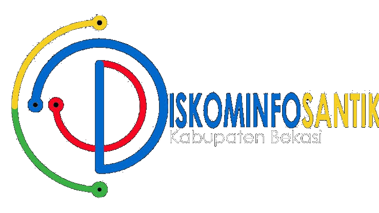

<footer id="footer" class="bg-navy" style="position: relative; z-index: 1050;">
  <div class="container">
    <div class="row g-4">
      
      <div class="col-lg-4">
        <div class="d-flex align-items-center mb-3">
          
        </div>
        <p class="small opacity-75 lh-lg mb-4">
          Mewujudkan tata kelola pemerintahan yang transparan, akuntabel, dan berbasis teknologi informasi untuk pelayanan publik yang prima.
        </p>
        <div class="d-flex gap-2">
          <a href="#" class="btn btn-outline-light rounded-circle social-btn"><i class="bi bi-facebook"></i></a>
          <a href="#" class="btn btn-outline-light rounded-circle social-btn"><i class="bi bi-instagram"></i></a>
          <a href="#" class="btn btn-outline-light rounded-circle social-btn"><i class="bi bi-twitter-x"></i></a>
          <a href="#" class="btn btn-outline-light rounded-circle social-btn"><i class="bi bi-youtube"></i></a>
        </div>
      </div>

      <div class="col-lg-3 ps-lg-5"> <h6 class="text-white fw-bold mb-4 position-relative d-inline-block">
          Tautan Cepat
          <div style="width: 40px; height: 2px; background: #ffb800; position: absolute; bottom: -8px; left: 0;"></div>
        </h6>
        <ul class="list-unstyled small d-grid gap-2">
          <li><a href="profil.html" class="text-decoration-none link-light"><i class="bi bi-chevron-right me-1" style="font-size: 10px;"></i> Profil Dinas</a></li>
          <li><a href="visidanmisi.php" class="text-decoration-none link-light"><i class="bi bi-chevron-right me-1" style="font-size: 10px;"></i> Visi & Misi</a></li>
          <li><a href="layanan.php" class="text-decoration-none link-light"><i class="bi bi-chevron-right me-1" style="font-size: 10px;"></i> Layanan Publik</a></li>
          <li><a href="berita.php" class="text-decoration-none link-light"><i class="bi bi-chevron-right me-1" style="font-size: 10px;"></i> Berita Terkini</a></li>
          <li><a href="dokumen.php" class="text-decoration-none link-light"><i class="bi bi-chevron-right me-1" style="font-size: 10px;"></i> Dokumen & Regulasi</a></li>
        </ul>
      </div>

      <div class="col-lg-5">
        <h6 class="text-white fw-bold mb-4 position-relative d-inline-block">
          Hubungi Kami
          <div style="width: 40px; height: 2px; background: #ffb800; position: absolute; bottom: -8px; left: 0;"></div>
        </h6>
        
        <div class="d-flex mb-3">
          <div class="me-3 text-warning"><i class="bi bi-geo-alt-fill fs-5"></i></div>
          <div>
            <span class="d-block fw-bold small text-white">Alamat Kantor:</span>
            <span class="small opacity-75">Gedung Diskominfosantik, Komplek Perkantoran Pemkab Bekasi, Desa Sukamahi, Kec. Cikarang Pusat, Kabupaten Bekasi, Jawa Barat 17530</span>
          </div>
        </div>

        <div class="d-flex mb-3">
          <div class="me-3 text-warning"><i class="bi bi-envelope-fill fs-5"></i></div>
          <div>
            <span class="d-block fw-bold small text-white">Email Resmi:</span>
            <span class="small opacity-75">diskominfosantik@bekasikab.go.id</span>
          </div>
        </div>

        <div class="d-flex">
          <div class="me-3 text-warning"><i class="bi bi-telephone-fill fs-5"></i></div>
          <div>
            <span class="d-block fw-bold small text-white">Telepon:</span>
            <span class="small opacity-75">(021) 899700XX</span>
          </div>
        </div>
      </div>

    </div>

    <hr class="my-4 border-light opacity-10" />

    <div class="d-md-flex justify-content-between align-items-center small opacity-75 text-center text-md-start">
      <p class="mb-2 mb-md-0">© 2026 Diskominfosantik Kabupaten Bekasi. All rights reserved.</p>
      <div>
        <a href="#" class="text-white text-decoration-none me-3">Kebijakan Privasi</a>
        <a href="#" class="text-white text-decoration-none">Syarat & Ketentuan</a>
      </div>
    </div>
  </div>
</footer>